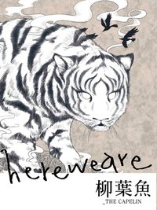
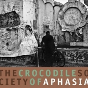
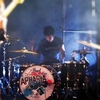

-樂團介紹-
柳葉魚
阿飛西亞
樂團綜合比較
柳葉魚
有兩件事一直困擾著我，一是每當有人問我們是玩什麼曲風，二是寫樂團介紹。
為什麼一定要把自己的音樂分門別類、侷限住呢？我們喜歡後搖、喜歡英搖、也喜歡grunge，誰說後搖不能喜歡Pearl Jam跟Alice in Chains，而且我們的後搖有solo。
你現在問我們玩什麼曲風，我會回答你後搖，但一年後、兩年後、以後的事誰都不知道吧，對我們來說音樂就是音樂，我想我會這樣介紹我們。

柳葉魚算是在這幾年新崛起的一個樂團，成員只有三位，一把吉他，一把BASS，一套鼓。我一開始接觸到他們的歌是「驚弓」，馬上就被開頭深沉又哀傷的旋律所吸引，接著帶入小鼓的節奏，一樣的緩慢，一樣的靜謐。 吉他的單音和銅拔的配合讓前奏始終保持在令人不敢呼吸的狀態下，深怕遺失任何一個音符。一個過門，BASS也加入了這段演奏，而吉他開始了和弦的刷扣，讓整首歌主邁入漸強，加上吉他手的嘶吼，整個推移到最高潮。最後就在一聲敲拔後，慢慢的，帶領向結尾... 很難得可以聽見這麼棒的歌，其他的作品也很令人回味，讓我有股衝勁想繼續看著他們走下去。
辛普森(Guitar/Vocal)
阿喵(Drum)
karu(Bass)
<專輯>
2009/01/21 [untitled]
裹著糖衣的駱駝
U-a
Breakthrough
2011/05/06 [Hereweare]
New Game
彼岸
Emergency Room
Discourse
--
很多老虎
驚弓
回頂端
阿飛西亞
阿飛西雅，是「APHASIA」，失語症的中文音譯。
失語症，是因為後天的腦部疾病導致失去語言能力，
某些語辭被遺忘，無法正確使用語言，或是了解語言。

阿飛西亞是我第一次聽到的後搖樂團，所謂的後搖樂就是指與一般搖滾樂團使用的樂器相同，但風格全然迥異的一種曲風。吉他不再是主角，主唱不再是必備要素，甚至連歌曲長度都有延長數倍的走向...這就是後搖。 當時沈溺在搖滾樂的重節奏的我，偶然的從朋友丟來的一首歌中發現了一種全新的體驗，而那首歌正是阿飛西亞的「戰車」。 從爵士鼓的前奏帶入，重復的旋律不斷在我腦海中播放，穿插着吉他的單音切入，時而快，時而慢，同時不一樣的和弦猛然交替，就如同歌名「戰車」般行進於大地上，穿越空間，直達耳中，然後再來一記重擊...
這是我第一個愛上的後搖樂團，阿飛西亞。 
kk(Bass)
小花(Guitar)
Yonker(Drum)
維尼(Guitar)
<專輯>
2008 [失語的鱷魚社會]
Behind the river
深春
戰車
雨季
This is a Go
畢業旅行
自由公路
台北之晨
2007 [夏天的尾巴]電影原聲帶 收錄：
田野
河那邊
要踢球嗎
夏天的尾巴
回頂端
-樂團綜合比較-
樂團名稱
柳葉魚
the caplin band
阿飛西亞
Aphasia
Marilyn Manson
曲風
後搖
另類金屬
成員數
3人
4人
5人
特色
主唱嘶啞的嗓音偶爾會穿插在樂曲中，增添味道
擅長在一首歌內變幻多種節奏，讓整首歌涵蓋不同的階層
迷人的嘶吼就是Marilyn最大的特色
如同絕望般的旋律
容易在歌中感受到深深的無奈
總是充斥着反基督，反權威的態度
除了歌詞之外，MV的拍攝手法和主題也相當具爭議性
powered by Steve
回頂端
問卷回報
心機調查表
網頁試作回報單
請輸入性名：
請選擇性別：
男性
女性 請選擇您偏好的早餐組合： 飲品-
酸掉的牛奶
變色的果汁
過期的豆漿 餐點-
臭掉的煎蛋
發霉的吐司
焦黑的香腸 請問感覺如何：
很好吃
非常好吃
請輸入您的感想：
感謝您的意見！ 請按下發送鍵傳送您寶貴的訊息